Справочник по системному программированию · модуль 2 · лабораторная работа
ЛР 8
Карта
памяти
Программа просит 300 МБ, а занятая память не растёт — пока в эти мегабайты ничего не записано. Разбираемся, чем обещанная память отличается от занятой, и учимся находить утечку.
- Пара
- 8
- Время
- 35–40 минут
- Программы
- VMMap, PowerShell, командная строка
ps,vmmap, Терминалps,pmap, терминал, Python 3.14 - Сдать
report.mdи 4 снимка вscreenshots/в папкеlabs/08-memory-mapрепозиторияsysprog-start
Суть за две минуты
Программа просит память — компьютер только записывает: «ваше». Как бронь столика в ресторане: тарелок на нём ещё нет.
Память тратится, когда программа что-то в неё кладёт.
У программы всегда два числа памяти: сколько обещано и сколько занято. Сколько она «съела», показывает второе.
macOS сжимает память, поэтому там смотрят на «физический след».
Программа берёт память и не отдаёт. Одно число этого не покажет: утечку видно по ряду замеров, где память только растёт.
В работе:пустой Python → карта памяти → бронь 300 МБ → запись в каждую страницу → освобождение → пять замеров утечки.
§1Подготовка
Нужен Python 3.14 из ЛР 7. Карту памяти показывает VMMap из набора Sysinternals: скачайте VMMap.zip с сайта Microsoft Learn и распакуйте в свою папку. На компьютере с процессором ARM запускается vmmap64a.exe, с x64 — vmmap64.exe; папку добавьте в PATH или запускайте программу по полному пути.ps и vmmap входят в macOS.ps и pmap входят в Ubuntu. В шаблоне в папке labs/08-memory-map лежат бланк report.md, папка screenshots/ и две программы. Первая — mem.py:
import mmap import os import time MB = 1024 * 1024 STAGE = 20 print("pid", os.getpid(), flush=True) print("1. start", flush=True) time.sleep(STAGE) data = mmap.mmap(-1, 300 * MB) print("2. got 300 MB", flush=True) time.sleep(STAGE) for i in range(0, len(data), mmap.PAGESIZE): data[i] = 1 print("3. wrote to every page", flush=True) time.sleep(STAGE) data.close() print("4. freed", flush=True) time.sleep(STAGE)
По-человечески программа делает четыре вещи, и после каждой ждёт 20 секунд, чтобы вы успели посмотреть память: стартует пустой, просит 300 МБ, кладёт по единице в каждый кусочек этих 300 МБ и отдаёт их обратно.
В коде: mmap.mmap(-1, 300 * MB) — попросить 300 МБ; цикл с шагом mmap.PAGESIZE — записать по единице в каждую страницу (кусочек памяти); close — отдать память.
Вторая программа, leak.py, каждую секунду кладёт в список ещё 10 МБ и ничего не отдаёт — это утечка.
import os import time print("pid", os.getpid(), flush=True) kept = [] for second in range(60): kept.append(bytearray(10 * 1024 * 1024)) time.sleep(1)
Вверху шага — действие. Ниже — кадр экрана после действия; красные рамки отмечают места, о которых идёт речь. Под действием — «Зачем этот шаг». Под каждым кадром — «Что на кадре»: что это за окно и что в каждой рамке. Ниже — «Что это значит»: вывод шага. Строка «В отчёт» — что записать в report.md. Номера процессов и размеры у вас будут другими. Если не успели выполнить команду за 20 секунд этапа, остановите программу (taskkill /im python.exe /fkill %1) и запустите её снова.
§2Обещанная и занятая память
Программа просит у компьютера 300 МБ памяти. Компьютер сначала только записывает обещание: «эти 300 МБ ваши». На деле он ничего не отдал — так ресторан бронирует столик, но тарелки на него ещё не ставит.
Настоящая память тратится, когда программа что-то туда кладёт. Поэтому у программы всегда два числа: сколько обещано и сколько занято на самом деле.
Два числа памяти программы
Обещано
Занято
Сколько памяти «съела» программа, показывает правое число.
Каждая программа-монитор показывает оба числа, но называет их по-своему. Эта таблица — подсказка, на какой столбец смотреть:
Где эти два числа в каждой программе
| Обещано | Занято | |
|---|---|---|
Linux, ps | VSZ | RSS |
| Windows, Get-Process | VirtualMemorySize64 | WorkingSet64 |
| Windows, VMMap | Committed | Working Set |
macOS, ps и vmmap | VSZ | Physical footprint (физический след) |
Названия столбцов на экране. ps пишет числа в килобайтах, Get-Process — в байтах.
Программисты называют обещанную память виртуальной, а занятую — резидентной. Компьютер выдаёт память кусочками по несколько килобайт — страницами. Эти слова встретятся в командах, но в работе хватит «обещано» и «занято».
Вот что должно происходить с mem.py на каждом этапе:
Что должно происходить на этапах mem.py
| Этап | Обещано | Занято |
|---|---|---|
| 1. старт | как у пустого Python | как у пустого Python |
| 2. получил 300 МБ | +300 МБ | не меняется |
| 3. записал в каждую страницу | +300 МБ | +300 МБ |
| 4. освободил | обратно | обратно |
Так должно быть — работа это проверит. Зелёное — обещание, розовое — настоящий расход.
§3Ход работы
-
Запустите программу и узнайте её памятьВ командной строке в папке
labs\08-memory-mapвыполнитеstart /b python mem.py. Программа запустится и напечатает свой номер. Следующий этап начнётся через 20 секунд, поэтому сразу выполнитеpowershell -c "Get-Process python | ft Id,WorkingSet64,PrivateMemorySize64,VirtualMemorySize64"
Команда покажет, сколько памяти у программы обещано и сколько занято.Запустите программу и узнайте её памятьВ Терминале в папкеlabs/08-memory-mapвыполнитеpython3.14 mem.py &. Программа запустится и напечатает свой номер. Следующий этап начнётся через 20 секунд, поэтому сразу выполнитеps -o pid,vsz,rss,comm -p $!; vmmap -summary $! | grep 'Physical footprint:'
Команда покажет, сколько памяти у программы обещано и сколько занято.Запустите программу и узнайте её памятьВ терминале в папкеlabs/08-memory-mapвыполнитеpython3.14 mem.py &. Программа запустится и напечатает свой номер. Следующий этап начнётся через 20 секунд, поэтому сразу выполнитеps -o pid,vsz,rss,comm -p $!. Команда покажет, сколько памяти у программы обещано и сколько занято.Зачем этот шагСначала запоминаем, сколько памяти у программы, которая ещё ничего не попросила. С этим числом будем сравнивать всё остальное.
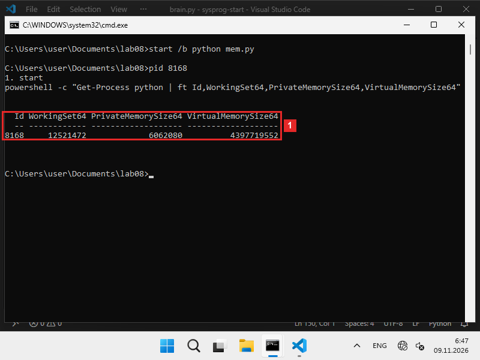
Что на кадреКомандная строка. Сверху программа напечатала свой номер — 8168. Ниже таблица: одна строка — наша программа, числа в байтах.
- 1Три числа. Первое,
WorkingSet64, — занято: 12 521 472 байта, около 12 МБ. Последнее,VirtualMemorySize64, — обещано: около 4,1 ГБ. Среднее, личная память, в этой работе не понадобится.
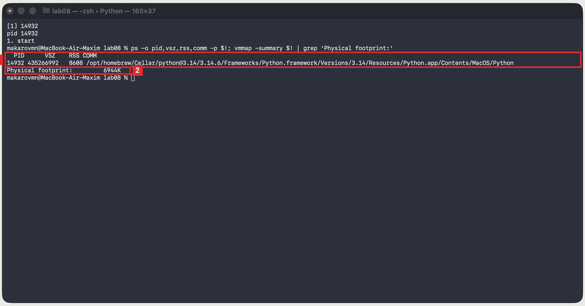
Что на кадреТерминал. Сверху программа напечатала свой номер — 14932. Ниже ответ команды: строка с числами и строка «Physical footprint».
- 1Строка с числами, размеры в килобайтах.
VSZ— обещано: около 415 ГБ.RSS— занято: 8608 КБ, около 8 МБ. - 2«Physical footprint», физический след, — сколько программа занимает на самом деле: 6944 КБ, около 7 МБ. В macOS смотрим на это число. Почему не на
RSS— будет видно в шаге 4.
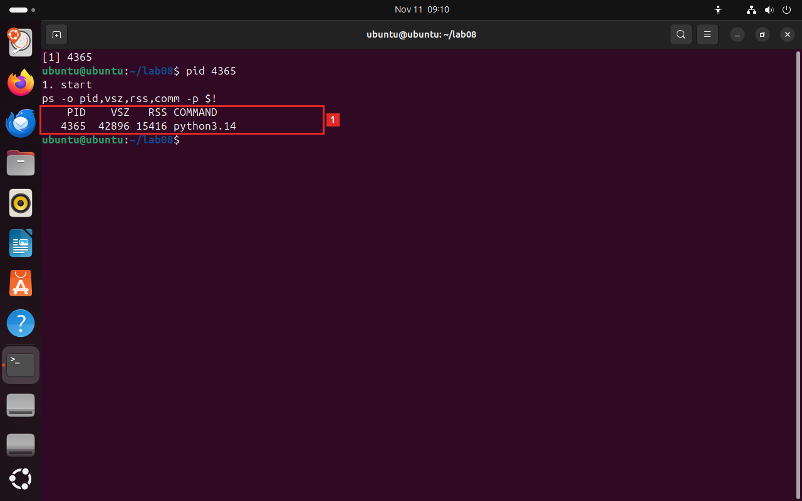
Что на кадреТерминал. Сверху программа напечатала свой номер — 4365. Ниже ответ команды, размеры в килобайтах.
- 1
VSZ— обещано: 42 896 КБ, около 42 МБ.RSS— занято: 15 416 КБ, около 15 МБ.
Что это значитПрограмма ещё ничего не просила, а обещано ей уже 4 ГБ. Это запас адресов, который Windows выдаёт заранее, он почти ничего не стоит. Занято — 12 МБ.
Что это значитОбещано 415 ГБ — macOS заранее выдаёт каждой программе огромный запас адресов. Это число ничего не говорит. Занято около 7 МБ.
Что это значитОбещано 42 МБ, занято 15 МБ. Разница — части библиотек, в которые программа ещё не заглядывала.
В отчёт. сколько памяти обещано и сколько занято на старте.
- 1Три числа. Первое,
-
Посмотрите карту памятиВыполните
start vmmap64a -accepteula -p python(на компьютере с процессором x64 —vmmap64). Откроется программа VMMap: она показывает всю память процесса по видам. Посмотрите и закройте окно.Посмотрите карту памятиВыполнитеvmmap -summary $! | grep -E 'VIRTUAL|REGION TYPE|MALLOC_SMALL |MALLOC_TINY|^Stack |VM_ALLOCATE|^__TEXT|^__DATA |^TOTAL '
Командаvmmapпоказывает память программы по видам, аgrepоставляет только главные строки.Посмотрите карту памятиВыполнитеpmap -x $!. Команда показывает память программы кусок за куском: что в каждом куске лежит и сколько в нём занято.Зачем этот шагПамять программы разложена по полкам: код самого Python, библиотеки, данные, стек. Смотрим на эти полки и на итог.
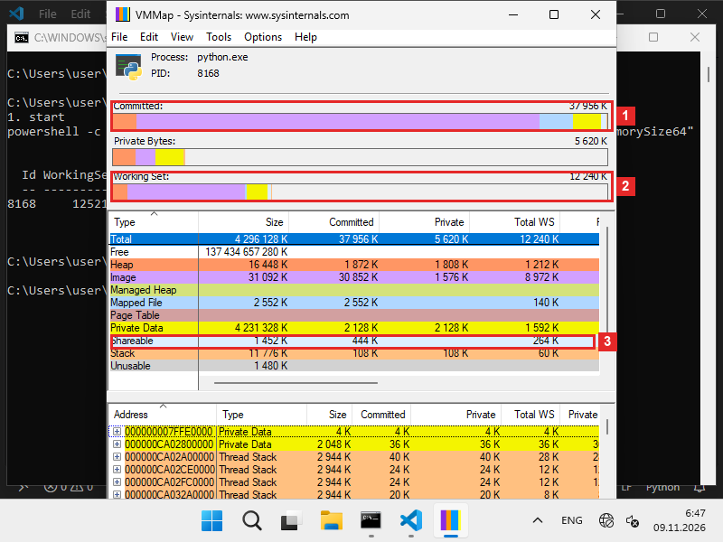
Что на кадреПрограмма VMMap. Сверху — цветные полосы: каждая показывает, сколько памяти какого вида. Ниже — таблица, одна строка — один вид памяти. Размеры в килобайтах (K).
- 1Полоса Committed — обещано: 37 956 K, около 37 МБ.
- 2Полоса Working Set — занято: 12 240 K, около 12 МБ. Она короче: занято меньше, чем обещано.
- 3Строка Shareable — общая память: 1 452 K. Сейчас она маленькая. В следующих шагах сюда попадут наши 300 МБ.
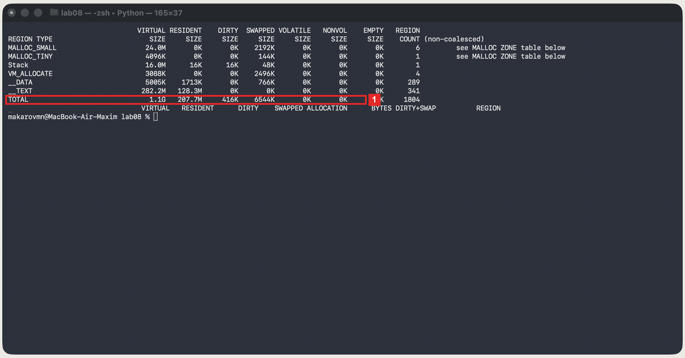
Что на кадреТерминал. Одна строка — один вид памяти: код Python и библиотек (
__TEXT), их данные (__DATA), рабочие данные программы (MALLOC), стек. Столбец VIRTUAL SIZE — обещано, RESIDENT SIZE — занято.- 1Строка
TOTAL— итог по всем полкам: обещано 1,1 ГБ, занято 207,7 МБ. Занято здесь больше, чем 7 МБ из шага 1: в итог входят общие библиотеки macOS, которыми пользуются все программы сразу.
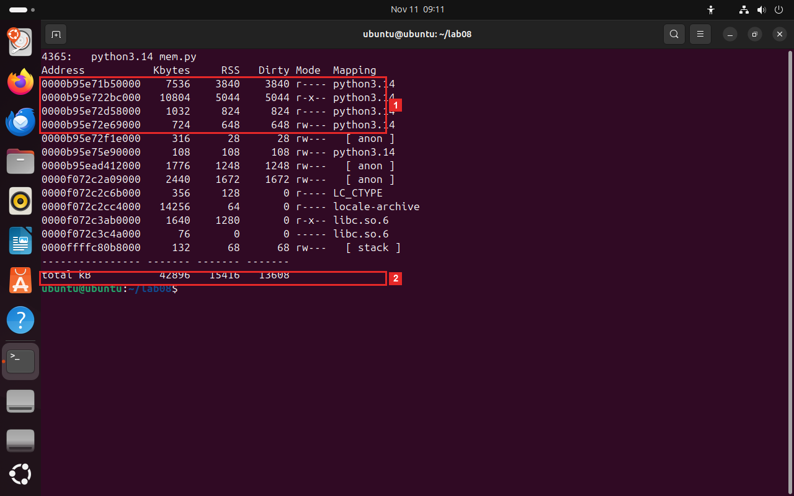
Что на кадреТерминал. Одна строка — один кусок памяти. Столбец Kbytes — размер куска (обещано), RSS — сколько из него занято, справа — что в куске лежит.
- 1Куски самого
python3.14: его код и данные. Ниже идут[ anon ]— рабочие данные программы,libc.so.6— библиотека C из ЛР 3,[ stack ]— стек. - 2Строка
total kB— итог: обещано 42 896 КБ, занято 15 416 КБ. Те же числа, что в шаге 1.
Что это значитПамять — это много полок разного вида: файлы программы и библиотек, рабочие данные, стеки. Сумма по полкам — те же «обещано» и «занято».
Что это значитПамять — это много полок разного вида. Больше всего обещано под код Python и библиотек.
Что это значитПамять — это много кусков: код, данные, библиотеки, стек. Если сложить их, получатся числа из шага 1.
В отчёт. из каких частей состоит память программы и сколько её всего.
Снимок в отчёт · 01 Сохраните окно как
screenshots/01_memory_map.png. На снимке должно быть видно: карта памяти процесса mem.py на старте и её итог. -
Дождитесь, пока программа получит 300 МБДождитесь строки
2. got 300 MB. Сразу повторите команду шага 1, затем снова откройте VMMap:start vmmap64a -p python.Дождитесь, пока программа получит 300 МБДождитесь строки2. got 300 MBи выполните команды шагов 1 и 2 одной строкой:clear; ps -o pid,vsz,rss,comm -p $!; vmmap -summary $! | grep 'Physical footprint:'; vmmap -summary $! | grep -E 'VIRTUAL|REGION TYPE|MALLOC_SMALL |MALLOC_TINY|^Stack |VM_ALLOCATE|^__TEXT|^__DATA |^TOTAL 'Дождитесь, пока программа получит 300 МБДождитесь строки2. got 300 MBи выполнитеclear; ps -o pid,vsz,rss,comm -p $!; pmap -x $! | sort -n -k2 | tail -2
Первая часть — команда шага 1. Вторая оставляет из карты памяти два самых больших куска.Зачем этот шагПрограмма попросила 300 МБ. Проверяем, что выросло: только обещание или настоящая память.
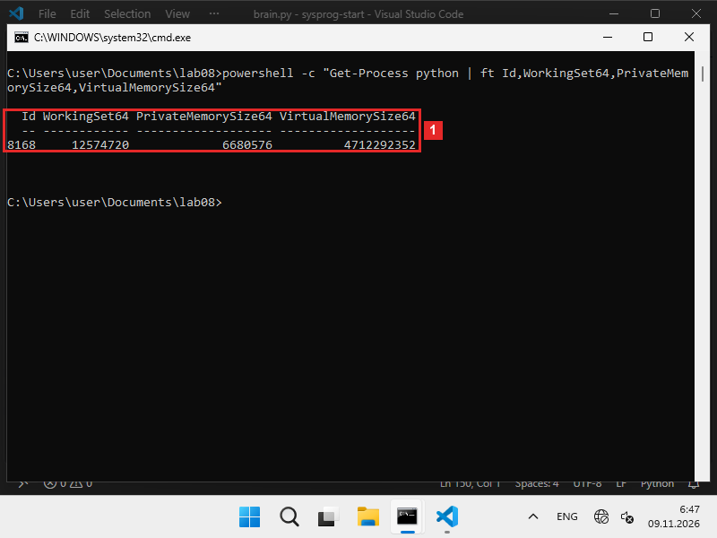
Что на кадреКомандная строка, та же таблица, что в шаге 1.
- 1Обещано — 4 712 292 352 байта: на 300 МБ больше, чем в шаге 1. Занято — 12 574 720 байт, около 12 МБ, почти как было.
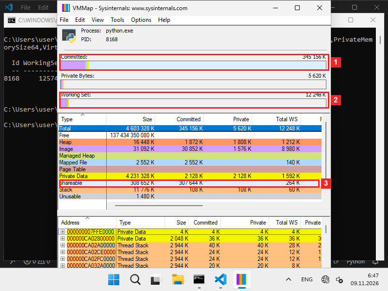
Что на кадреVMMap после того, как программа получила 300 МБ.
- 1Committed — обещано: 345 156 K. В шаге 2 было 37 956 K — выросло на 300 МБ.
- 2Working Set — занято: 12 248 K. Было 12 240 K — почти не изменилось.
- 3Строка Shareable: обещано 307 644 K — это наши 300 МБ. Занято из них только 264 K.
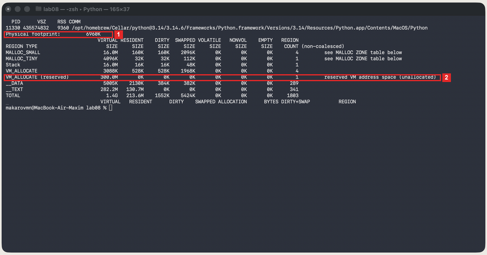
Что на кадреТерминал, программа номер 11330. Сверху строка с числами и физический след, ниже — память по видам.
- 1Физический след — 6960 КБ, около 7 МБ. Как на старте: занятая память не выросла.
- 2Новая строка
VM_ALLOCATE (reserved)— наши 300 МБ. Обещано 300 МБ, занято 0. macOS сама подписала справа: «reserved VM address space (unallocated)» — адреса отложены, память не выдана.
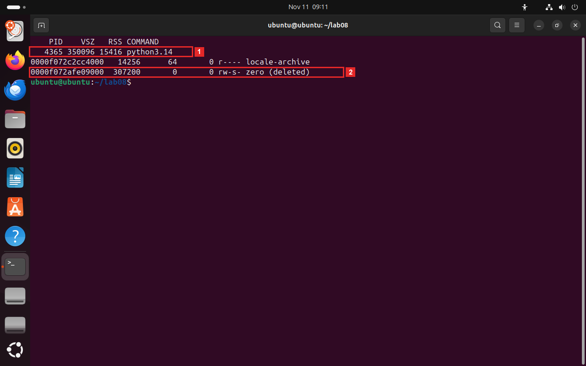
Что на кадреТерминал. Сверху — команда шага 1, ниже — два самых больших куска памяти, размеры в килобайтах.
- 1
VSZ— обещано: 350 096 КБ, на 300 МБ больше, чем в шаге 1.RSS— занято: 15 416 КБ, как было. - 2Новый кусок на 307 200 КБ — это ровно 300 МБ. В столбце RSS у него 0: занято ничего.
Что это значитОбещание выросло на 300 МБ, а занятая память — нет. Программа попросила память, но ещё ничего в неё не положила.
Что это значитОбещание выросло на 300 МБ, а занятая память — ни на килобайт. Программа попросила память, но ещё ничего в неё не положила.
В отчёт. сколько обещано и сколько занято после получения 300 МБ.
Снимок в отчёт · 02 Сохраните окно как
screenshots/02_reserved.png. На снимке должно быть видно: виртуальная память выросла на 300 МБ, занятая — нет. -
Дождитесь, пока программа запишет данныеДождитесь строки
3. wrote to every page: программа записала по единице в каждый кусочек своих 300 МБ. Повторите команду шага 1 и откройте VMMap.Дождитесь, пока программа запишет данныеДождитесь строки3. wrote to every page: программа записала по единице в каждый кусочек своих 300 МБ. Повторите команду шага 3.Зачем этот шагТеперь программа кладёт по единице в каждый кусочек этих 300 МБ. Смотрим, в какой момент память начинает тратиться по-настоящему.
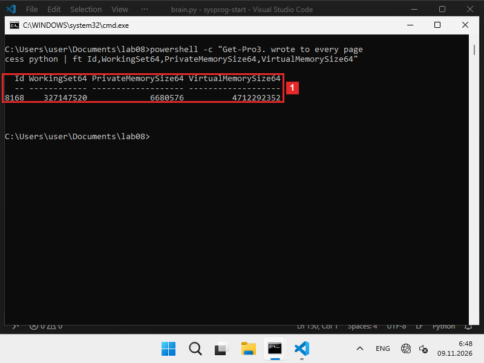
Что на кадреКомандная строка, та же таблица. Сообщение программы «3. wrote to every page» напечаталось посреди команды — на таблицу это не влияет.
- 1Занято — 327 147 520 байт, около 312 МБ. В шаге 3 было 12 МБ: выросло на 300 МБ. Обещано столько же, сколько в шаге 3.
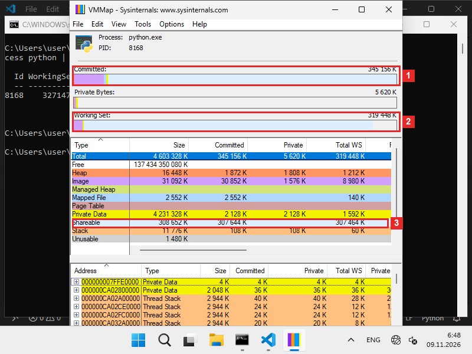
Что на кадреVMMap после записи.
- 1Committed — обещано: 345 156 K, как в шаге 3.
- 2Working Set — занято: 319 448 K, около 312 МБ. В шаге 3 было 12 248 K.
- 3Строка Shareable: занято 307 464 K — все наши 300 МБ.
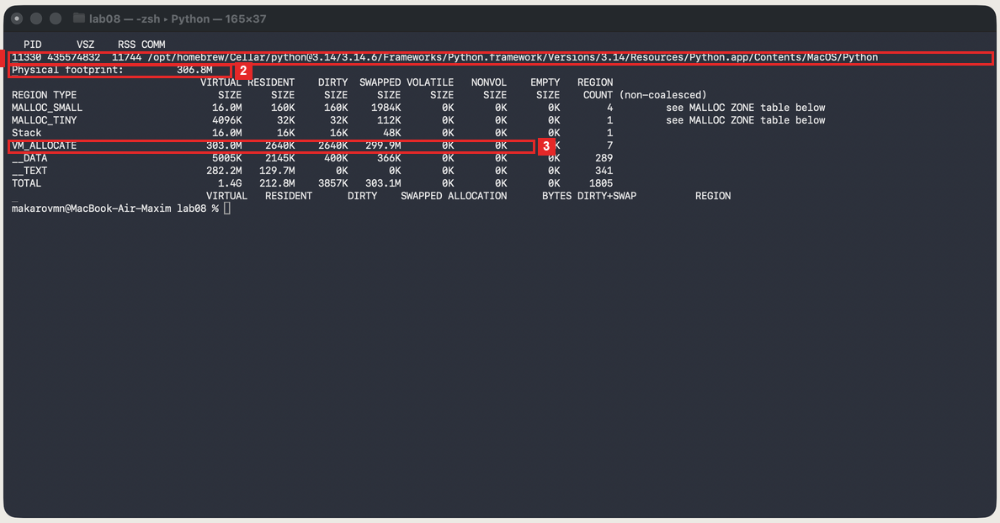
Что на кадреТерминал, программа номер 11330. Та же команда, что в шаге 3.
- 1
RSS— 11 744 КБ, около 11 МБ. Почти не вырос, хотя программа заполнила 300 МБ. - 2Физический след — 306,8 МБ. Было 7 МБ: вырос на 300 МБ.
- 3Строка
VM_ALLOCATE— наши 300 МБ. В столбце SWAPPED (сжато) — 299,9 МБ: почти всё macOS сразу сжала.
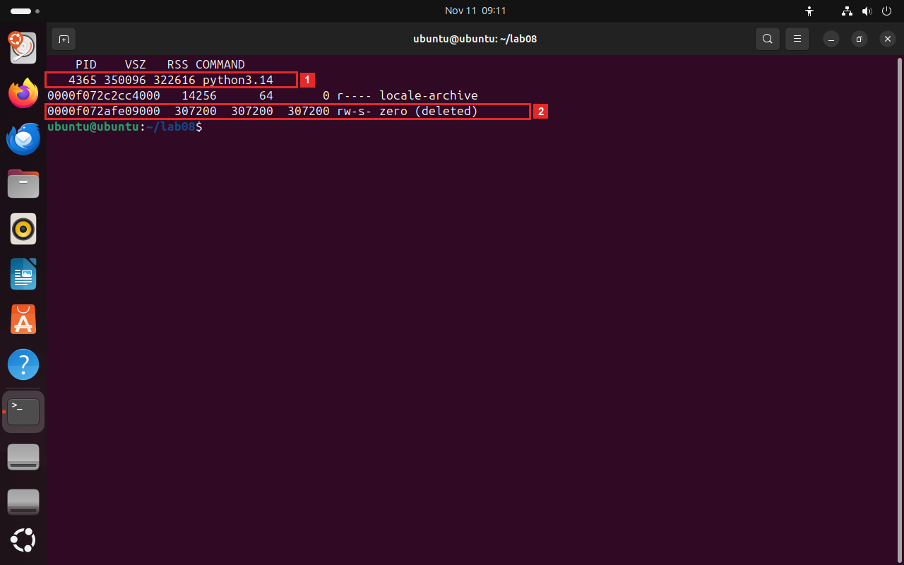
Что на кадреТерминал, та же команда, что в шаге 3.
- 1
RSS— занято: 322 616 КБ, около 315 МБ. В шаге 3 было 15 МБ: выросло на 300 МБ. Обещано столько же. - 2Кусок на 300 МБ: в столбце RSS теперь 307 200 — занят весь.
Что это значитОбещание не изменилось, а занятая память выросла на 300 МБ. Память тратится, когда программа в неё пишет, а не когда просит.
Что это значитПамять заняли — физический след вырос на 300 МБ. Но в этих 300 МБ почти одни нули, и macOS сразу сжала их, как вещи в вакуумный пакет. Обычное число «занято»,
RSS, сжатое не считает, поэтому почти не выросло. Физический след считает всё — на него в macOS и смотрят. Его же показывает столбец «Память» в Мониторинге системы.В отчёт. сколько обещано и сколько занято после записи.
Снимок в отчёт · 03 Сохраните окно как
screenshots/03_touched.png. На снимке должно быть видно: занятая память (в macOS — физический след) после записи в каждую страницу. -
Дождитесь, пока программа отдаст памятьДождитесь строки
4. freedи повторите команду шага 1.Дождитесь, пока программа отдаст памятьДождитесь строки4. freedи выполнитеclear; ps -o pid,vsz,rss,comm -p $!; vmmap -summary $! | grep 'Physical footprint:'Дождитесь, пока программа отдаст памятьДождитесь строки4. freedи выполнитеclear; ps -o pid,vsz,rss,comm -p $!.Зачем этот шагПроверяем, что программа вернула память системе. Если бы не вернула, это уже была бы утечка.
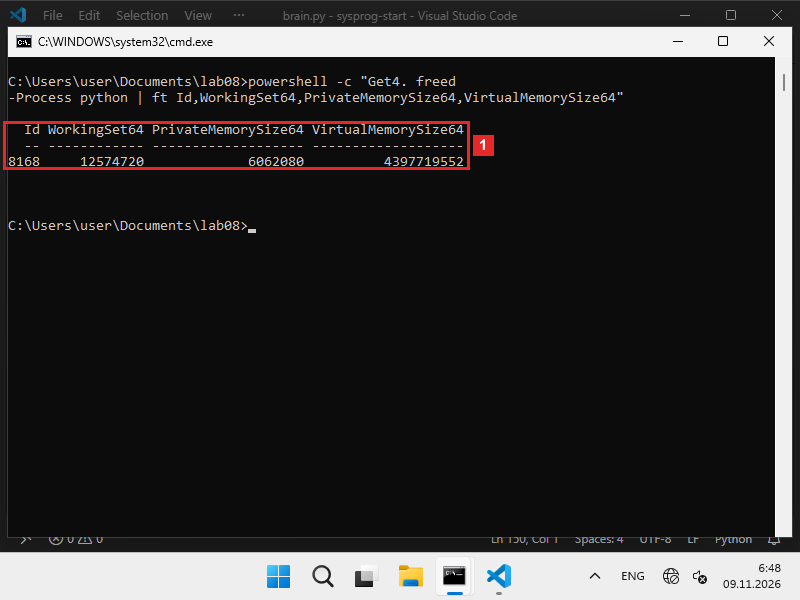
Что на кадреКомандная строка, та же таблица. Сообщение «4. freed» напечаталось посреди команды — на таблицу это не влияет.
- 1Занято — около 12 МБ, обещано — около 4,1 ГБ. Почти как в шаге 1.
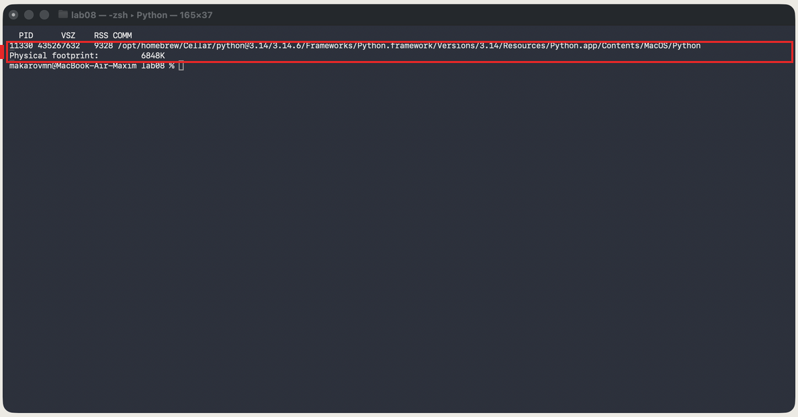
Что на кадреТерминал, команда шага 1.
- 1
RSS— 9328 КБ, физический след — 6848 КБ, около 7 МБ. Как на старте.
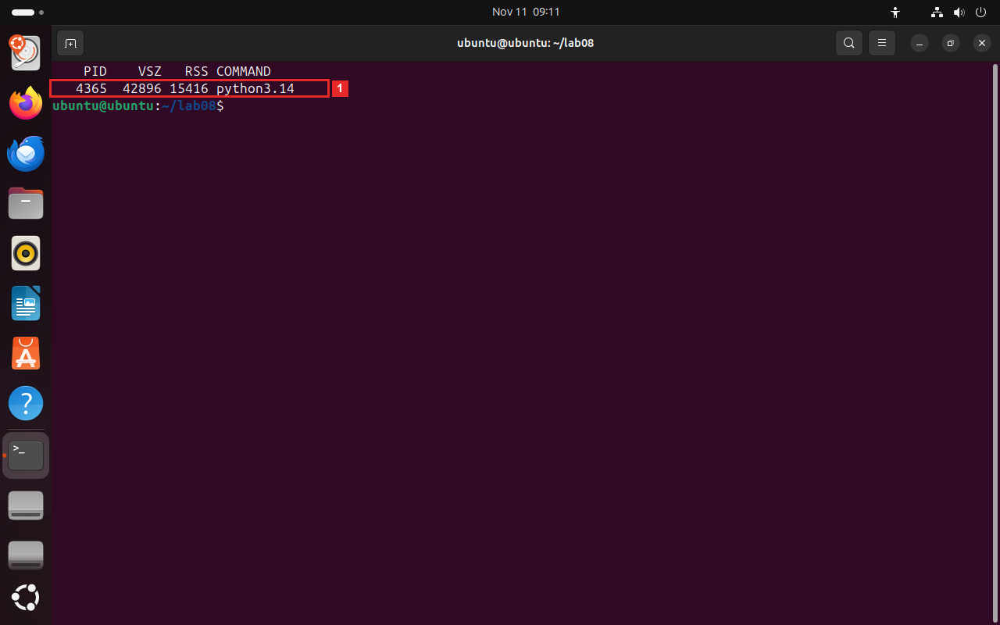
Что на кадреТерминал, команда шага 1.
- 1
VSZ— 42 896 КБ,RSS— 15 416 КБ. Ровно числа шага 1.
Что это значитПрограмма отдала 300 МБ — обещание и занятая память вернулись к началу.
Что это значитПрограмма отдала 300 МБ — физический след вернулся к началу.
В отчёт. память после того, как программа её отдала.
-
Найдите утечкуЗапустите вторую программу:
start /b python leak.py. Она каждую секунду берёт ещё 10 МБ и ничего не отдаёт. Затем выполнитеfor /l %i in (1,1,5) do @(powershell -c "(Get-Process python).WorkingSet64" & timeout /t 2 >nul)
Команда пять раз, раз в 2 секунды, печатает, сколько памяти занято.Найдите утечкуЗапустите вторую программу:python3.14 leak.py &. Она каждую секунду берёт ещё 10 МБ и ничего не отдаёт. Затем выполнитеfor i in 1 2 3 4 5; do vmmap -summary $! | grep 'Physical footprint:'; sleep 2; done
Команда пять раз, раз в 2 секунды, печатает физический след.Найдите утечкуЗапустите вторую программу:python3.14 leak.py &. Она каждую секунду берёт ещё 10 МБ и ничего не отдаёт. Затем выполнитеfor i in 1 2 3 4 5; do ps -o rss= -p $!; sleep 2; done. Команда пять раз, раз в 2 секунды, печатает, сколько памяти занято. В конце остановите программу:kill %1.Зачем этот шагГлавная задача на практике: по нескольким замерам отличить утечку от программы, которой просто нужно много памяти.
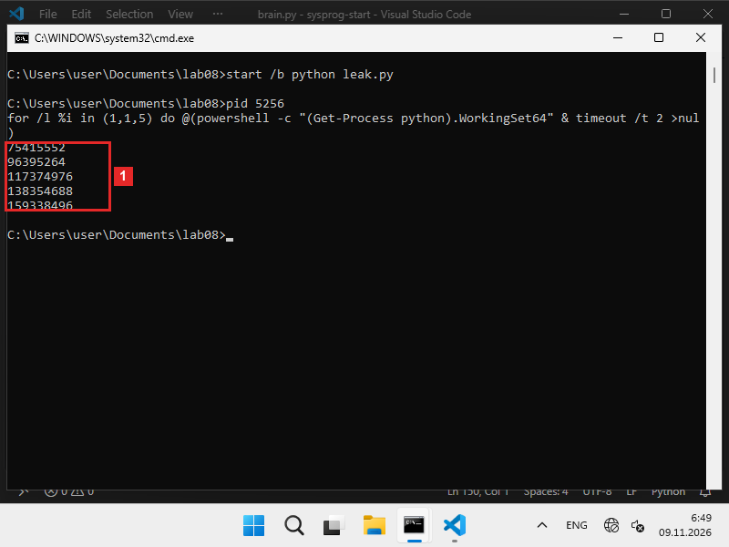
Что на кадреКомандная строка. Одна строка — один замер занятой памяти, в байтах.
- 1Пять замеров: около 72, 92, 112, 132 и 152 МБ. Каждый следующий больше предыдущего на 20 МБ.
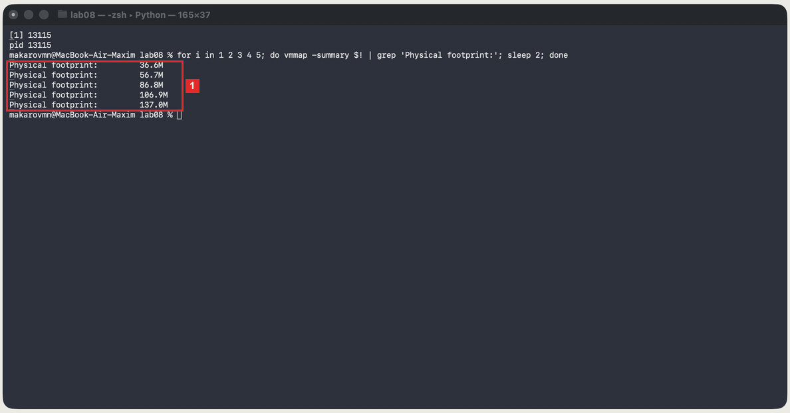
Что на кадреТерминал. Одна строка — один замер физического следа.
- 1Пять замеров: 36,6, 56,7, 86,8, 106,9 и 137,0 МБ. Каждый следующий больше предыдущего на 20–30 МБ.
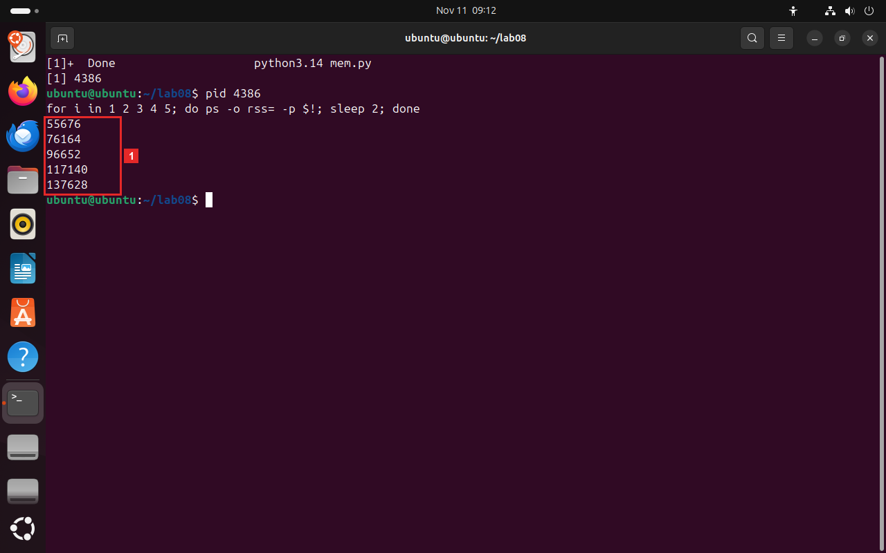
Что на кадреТерминал. Одна строка — один замер занятой памяти, в килобайтах. Верхняя строка «Done … mem.py» — сообщение о том, что программа из прошлых шагов закончилась.
- 1Пять замеров: 55 676, 76 164, 96 652, 117 140 и 137 628 КБ — около 54, 74, 94, 114 и 134 МБ. Каждый следующий больше предыдущего ровно на 20 МБ.
Что это значитЗа 2 секунды программа берёт две порции по 10 МБ — отсюда +20 МБ. Число только растёт и не останавливается: так выглядит утечка.
Что это значитЧисло только растёт и не останавливается: так выглядит утечка.
RSSздесь не годится: macOS сжимает память, и он то растёт, то падает.В отчёт. пять замеров и на сколько память росла за 2 секунды.
Снимок в отчёт · 04 Сохраните окно как
screenshots/04_leak.png. На снимке должно быть видно: пять замеров памяти leak.py.
Как выглядит утечка
Постоялец каждую секунду приносит в номер новую коробку и ничего не выбрасывает. Через минуту номер забит. leak.py так же каждую секунду кладёт в список 10 МБ и держит их.
Одна цифра ничего не говорит: 137 МБ — может, процессу так и нужно. Утечку выдаёт ряд замеров, где число только растёт.
замер 1
55 МБзамер 2
76 МБзамер 3
97 МБзамер 5
138 МБвсё время вверхЧто есть что. Коробка — bytearray(10 * 1024 * 1024), номер — список kept. Числа — Linux, шаг 6.
§4Что получилось
| Этап | Windows: обещано / занято | macOS: RSS / физический след | Linux: обещано / занято |
|---|---|---|---|
| Старт | 4,10 ГБ / 12 МБ | 8,4 / 6,8 МБ | 42 / 15 МБ |
| Получил 300 МБ | 4,39 ГБ / 12 МБ | след 6,8 МБ, область «reserved» | 342 / 15 МБ |
| Записал в каждую страницу | 4,39 ГБ / 312 МБ | 11,5 / 306,8 МБ | 342 / 315 МБ |
| Освободил | 4,10 ГБ / 12 МБ | 9,1 / 6,7 МБ | 42 / 15 МБ |
| Утечка, 5 замеров за 8 с | 72 → 152 МБ | след 36,6 → 137,0 МБ | 54 → 134 МБ |
- Когда программа просит память, растёт только «обещано».
- «Занято» растёт, когда программа что-то кладёт в память. Когда отдаёт — оба числа возвращаются.
- Утечку выдаёт ряд замеров, где память только растёт.
- Смотреть на «занято»: в Windows —
WorkingSet64, в Linux —RSS, в macOS — физический след, потому что macOS сжимает память.
§5Отчёт
Бланк — в labs/08-memory-map/report.md. Замените каждый пропуск ___ данными со своего экрана, снимки положите в screenshots/. Коммит — labs 08: карта памяти, отчёт.
# ЛР 8. Карта памяти Система: ___ Чем мерил (виртуальная и занятая): ___ ## Этапы mem.py Старт: ___ Получил 300 МБ: ___ Записал в каждую страницу: ___ Освободил: ___ Почему занятая память выросла только на третьем этапе: ___ ## Карта памяти Из каких частей состоит память процесса: ___ ## Утечка Пять замеров leak.py: ___ На сколько росла память за 2 секунды: ___ Не получилось: ___ ## Снимки экрана    
Кроме чисел в отчёт кладутся 4 снимков экрана. В папке labs/08-memory-map/screenshots уже лежат заглушки с нужными именами, а в report.md — ссылки на них с подписями. Сделайте снимок окна после шага из таблицы и сохраните его поверх заглушки с тем же именем: подпись и ссылку менять не нужно, на GitHub отчёт сразу покажет ваш снимок. В каждом шаге такой снимок отмечен оранжевой строкой «Снимок в отчёт».
Как снять окно: Win+Shift+S → «Окно», затем сохранить из «Ножниц» как PNG⌘+⇧+4, затем Пробел и щелчок по окну — PNG появится на Рабочем столеPrtSc → «Окно», PNG сохраняется в папку «Изображения/Снимки экрана». Снимок — всё окно программы, без обрезки; имя файла — строго из таблицы.
| № | После шага | Файл | Что должно быть видно |
|---|---|---|---|
| 01 | 2 | 01_memory_map.png | карта памяти процесса mem.py на старте и её итог |
| 02 | 3 | 02_reserved.png | виртуальная память выросла на 300 МБ, занятая — нет |
| 03 | 4 | 03_touched.png | занятая память (в macOS — физический след) после записи в каждую страницу |
| 04 | 6 | 04_leak.png | пять замеров памяти leak.py |
§6Проверьте себя
Вопросы с ответами: 5
Почему после mmap на 300 МБ занятая память не изменилась?
Система выдала процессу адреса, но страницы в оперативной памяти даёт только при первой записи. Пока страницу не трогали, она ничего не стоит.
Какая цифра показывает, сколько памяти процесс действительно занимает?
Резидентная: RSS в Linux, рабочий набор в Windows. В macOS — физический след: он учитывает и сжатые страницы.
Почему в macOS RSS после записи почти не вырос?
Страницы почти сплошь из нулей, и macOS сразу их сжала. Сжатые страницы не входят в RSS, но входят в физический след — 306,8 МБ.
Как отличить утечку от программы, которой просто нужно много памяти?
По ряду замеров. Программе, которой нужно много, память растёт до какого-то уровня и останавливается. При утечке она растёт без остановки.
Что такое страница?
Кусок памяти, которым система её выдаёт: 4 КБ в Windows и Linux, 16 КБ в macOS на процессорах Apple. Записав один байт, процесс получает всю страницу.